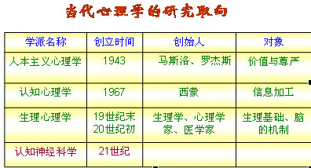

00:00
第三单元 心理学发展简史
一、科学心理学的建立
- 1.孔子的“性相近习相远也”，孟子的性善论等。
- 2.古希腊的希波克拉底把人分为：胆汁质、多血质、粘液质、抑郁质。古希腊的盖伦提出气质。方法：思辨、总结自己的经验
- 3.1840年韦伯的感觉阈限，1860年费希纳的心理物理法，尤其是1879年冯特建立心理学实验室。
二、学派的纷争
19世纪末20世纪初，心理学发展初期，人们对心理现象的认识还处于初级阶段。
观点不同，形成不同学派。
08:53
三、当代心理学研究的主要取向
20世纪30年代，学派之争结束，转而研究心理现象的规律。 二战后，出现新的研究领域。

第四单元 研究心理现象的原则和方法
一、研究心理学的原则
（一）客观性原则
（二）辨证发展原则
（三）理论联系实际的原则
18:06
二、心理学的研究方法
（一）观察法
在自然条件下，有目的、有计划地系统观察人的行为和活动，从中发现心理现象产生和发展的规律的方法。
（二）调查法
就某一问题，用口头或书面的形式向被调查的对象提问，让他回答，通过对他的回答的分析来了解他的心理活动的方法。
（三）个案法
（四）实验法
实验研究的方法就是主试者在严格控制的条件下，观察被试者的行为或活动，探索客观条件和人的心理活动之间的因果联系的研究方法。